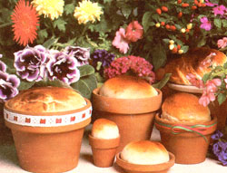

Almost everyone's heard of the Calgary Stampede-that exhilarating, high-ridin', stomp-'n'-holler rodeo held every summer in Calgary, Alberta, Canadabut I recently discovered that Calgary has other attractions as well. While in that lovely city I met one of them: Ms. Terry Harries, a charming lady who has adapted the clay oven bread-baking methods of her pioneer ancestors to modern living . . . using common, everyday red clay flowerpots.
As a child, Terry had listened spellbound to the stories her grandmother would tell about the fragrant, flavorful loaves baked in the outdoor clay ovens used by the early western homesteaders. Well, years later, with a family of her own to feed, Terry wondered whether she could duplicate the golden-crusted beauties she'd heard about ... and, since she didn't have a clay oven, she decided to bake the bread in clay flowerpots. The resulting loaves were delicious . . . and the innovative Canadian has been baking in flowerpots ever since.
In fact, during Canada's centennial in 1968, the Harries family held a huge outdoor "bread bash" for hundreds of visitors from North America and abroad. Women from the surrounding countryside contributed homemade butter and jam . . . a local band supplied music for dancing ... Terry and her husband donned old-time apparel . . . and when the ship's bell rang to announce that the bread was being sliced and the coffee was ready, the delighted guests were greeted by a spectacular display: Terry had outdone herself by preparing more than 100 loaves for the party! Later that same year, her bread was featured on television when the "Galloping Gourmet" demonstrated her method of baking in clay pots. But her proudest moment came in 1975, when the city of Calgary had its own hundredth birthday and Terry was given an official certificate by the Centennial Committee . . . declaring her bread to be "Calgary's Own".
To follow the recipe below, you'll first need to locate six unused 6" flowerpots made of natural red clay. Scrub them well (don't wash them with dish soap, however, or the cleanser's flavor may be absorbed by the clay) and let them stand until they're completely dry. Next, using any unsalted fat or shortening, grease the insides of the pots-including the rims-thoroughly. Now, place the containers in a moderate (350-375°F) oven for one hour, then turn the heat off and let the pots cool in the oven. Repeat the greasing, warming, and cooling process once . . . and your "baking pans" should be ready. (Be sure, though, to grease them each time you bake in them and before storing them. Such treatment will both keep your loaves from sticking to the pots and prevent any contaminating bacteria from taking root in the containers' pores.) Some kinds of shortening may tend to smoke a bit while being "cooked" into the clay, so it's a good idea to use your stove's ventilator fan-or open a window or doorbefore you put the pots in the oven.
To make this chewy, hearty bread, soak 1/2 cup of raisins in 1 cup of boiling water for 10 minutes. Drain and set them aside. Next, in a small bowl, dissolve 2 teaspoons of sugar or honey and 2 tablespoons of active dry yeast in 1 cup of lukewarm water. While this is "working", combine 3 cups of scalded and cooled milk, 2 tablespoons of molasses, 1/4 cup of melted butter or lard, 1 cup of chopped nuts, 2 tablespoons of caraway seed, and 2 tablespoons of salt in a large, warm bowl. Stir in the drained raisins, add the yeast mixture, and stir again. Now, beat in 4 cups of unbleached flour, then 2 cups of whole wheat flour plus another cup of unbleached flour, then 2 cups of graham flour (or 2 more cups of whole wheat flour).
Once an initial kneading-with flour added as necessary-has made the dough cohesive, Terry treats it roughly: She picks it right up and slams it down on the tabletop again and again! This 10 to 12-minute process breaks down the gas pockets formed by the yeast, making a finetextured loaf.
Shape the kneaded dough into a large ball . . . grease the top . . . place it in a large, clean, oiled bowl . . . and let it rise until it doubles in bulk (about 1 to 1-1/2 hours). Punch the risen mass down and let it rise again, for about 1 hour . . . after which you can punch the dough down once more, form it into balls that half-fill your flowerpots, and set it to rise until the dough peeks over the edges 1 about 45 to 50 minutes).
Bake the bread at 375°F for 10 minutes, then reduce the temperature to 350°F for up to 50 minutes more, or until the tops are browned and the loaves sound hollow when tapped.
The Canuck cook likes to remove the loaves from the pots when they're nearly done, and slip them back into the oven for 10 minutes to make the crust crisp. (Clay pots get hot and may crack if placed on a cold surface, so handle them with oven mitts and set them down only on a wooden board or thick pad.)
I tried Terry's recipes for the first time when I had a two-year-old constantly underfoot, and the bread was a success. I know it will be for you, too!
EDITOR'S NOTE: If you would like to sample some of Ms. Harries' other bread recipes, You can write to Margo Fedor (Dept. TMEN, Box 1075, Belgrade, Montana 59714) and order her recipe book. The cost is $4.99, postpaid.
|
 |
|
|